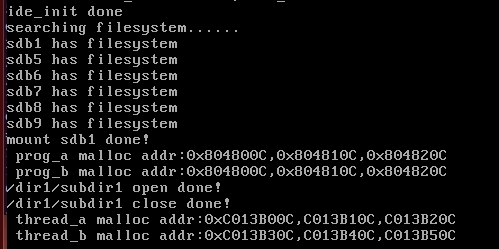

文件描述符
inode相关操作（目录，路径解析，文件检索）
文件描述符
内核（kernel）利用文件描述符（file descriptor）来访问文件。文件描述符是非负整数。打开现存文件或新建文件时，内核会返回一个文件描述符。读写文件也需要使用文件描述符来指定待读写的文件。该扇区，从而实现了文件的读写。几乎所有的操作系统都允许一个进程同时、多次、打开同一个文件（并不关闭），同样该文件也可以被多个不同的进程同时打开。
为实现文件任意位置的读写，执行读写操作时可以指定偏移量作为该文件内的起始地址，此偏移量相当于文件内的指针。
文件描述符与inode
读写文件的本质是 先通过文件的 inode 找到文件数据块的扇区地址，随后读写。
可以组织一个"文件数据结构"（包含文件偏移量，文件打开标志，inode指针等信息），方便对文件进行操作，即文件描述符。
在linux中每个进程都有单独的，完全相同的一套文件描述符，因此它们与其他进程的文件描述符互不干涉，这些文件描述符被组织成文件描述符数组进行统一的管理。
（每个进程在PCB（Process Control Block）中保存着一份文件描述符表，文件描述符就是这个表的索引，每个表项都有一个指向已打开文件的指针。）
Linux 通过文件描述符查找文件数据块
- 进程PCB中有文件描述符数组
- 文件表中存储了所有文件的结构（文件结构中有inode先关信息） -- 在内存中创建好的全局结构
- 根据inode队列（inode缓存），找到最终的磁盘位置
文件 相关操作
创建普通文件 file_create 函数
创建普通文件需要考虑的工作
1) 文件需要 inode 来描述大小、位置等属性 ，所以创建文件就要创建其 inode 。这就涉及到向inode_bitmap 申请位图来获得 inode 号，因此 inode_bitmap 会被更新， inode_table 数组中的某项也会由新的 inode 填充 。
2) inode->i_sectors 是文件具体存储的扇区地址，这需要向 block_bitmap 申请可用位来获得可用的块（在我们这里，为简化处理， 1 块等于 1 扇区），因此 block_bitmap 会被更新，分区的数据区 data_start_lba 以后的某个扇区会被分配 。
3) 新增加的文件必然存在于某个目录，所以该目录的 inode->i_size 会增加一个目录项的大小(目录项存储文件名和i节点) 。 此新增加的文件对应的目录项需要写入该目录的 inode->i_sectors［］中的某个扇区，原有扇区可能己满，所以有可能要申请新扇区来存储目录项 。
4) 若其中某步操作失败，需要回滚到之前己成功的操作。
5) inode_bitmap 、 block_bitmap、新文件的 inode 及文件所在目录的 inode，这些位于内存中已经被改变的数据要同步到硬盘。
创建目录
创建目录所涉及的工作包括。
- 1) 确认待创建的新目录在文件系统上不存在。
- 2) 为新目录创建 inode 。
- 3) 为新目录分配 1 个块存储该目录中的目录项。
- 4) 在新目录中创建两个目录项"."和"..",这是每个目录都必须存在的两个目录项。
- 5) 在新目录的父目录中添加新目录的目录项。
- 6) 将以上资源的变更同步到硬盘。
遍历目录就是读取目录中所有的目录项，在遍历之前必须要先把目录打开，之后还需要把目录关闭。
pwd命令和cd命令： 每个目录都存储着当前目录和上一级目录，所以可以理论上可以访问到分区中所有的目录
文件和目录的创建，读写
代码见19_fd_inode_dir_file\code\code_01
printf("/dir1/subdir1 create %s!\n", sys_mkdir("/dir1/subdir1") == 0 ? "done" : "fail");
printf("/dir1 create %s!\n", sys_mkdir("/dir1") == 0 ? "done" : "fail");
printf("now, /dir1/subdir1 create %s!\n", sys_mkdir("/dir1/subdir1") == 0 ? "done" : "fail");
int fd = sys_open("/dir1/subdir1/file2", O_CREAT|O_RDWR);
if (fd != -1) {
printf("/dir1/subdir1/file2 create done!\n");
sys_write(fd, "Catch me if you can!\n", 21);
sys_lseek(fd, 0, SEEK_SET);
char buf[32] = {0};
sys_read(fd, buf, 21);
printf("/dir1/subdir1/file2 says:\n%s", buf);
sys_close(fd);
}

目录的打开关闭
在文件，目录创建成功，并写入磁盘的基础上，测试目录的打开与关闭
struct dir* p_dir = sys_opendir("/dir1/subdir1");
if (p_dir) {
printf("/dir1/subdir1 open done!\n");
if (sys_closedir(p_dir) == 0) {
printf("/dir1/subdir1 close done!\n");
} else {
printf("/dir1/subdir1 close fail!\n");
}
} else {
printf("/dir1/subdir1 open fail!\n");
}

文件和目录的删除
/******** 测试代码 ********/
printf("/dir1 content before delete /dir1/subdir1:\n");
struct dir* dir = sys_opendir("/dir1/");
char* type = NULL;
struct dir_entry* dir_e = NULL;
while((dir_e = sys_readdir(dir))) {
if (dir_e->f_type == FT_REGULAR) {
type = "regular";
} else {
type = "directory";
}
printf(" %s %s\n", type, dir_e->filename);
}
printf("try to delete nonempty directory /dir1/subdir1\n");
if (sys_rmdir("/dir1/subdir1") == -1) {
printf("sys_rmdir: /dir1/subdir1 delete fail!\n");
}
printf("try to delete /dir1/subdir1/file2\n");
if (sys_rmdir("/dir1/subdir1/file2") == -1) {
printf("sys_rmdir: /dir1/subdir1/file2 delete fail!\n");
}
if (sys_unlink("/dir1/subdir1/file2") == 0 ) {
printf("sys_unlink: /dir1/subdir1/file2 delete done\n");
}
printf("try to delete directory /dir1/subdir1 again\n");
if (sys_rmdir("/dir1/subdir1") == 0) {
printf("/dir1/subdir1 delete done!\n");
}
printf("/dir1 content after delete /dir1/subdir1:\n");
sys_rewinddir(dir);
while((dir_e = sys_readdir(dir))) {
if (dir_e->f_type == FT_REGULAR) {
type = "regular";
} else {
type = "directory";
}
printf(" %s %s\n", type, dir_e->filename);
}
/******** 测试代码 ********/